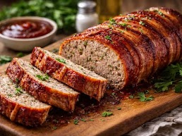

Meatloaf Recipe
A family favorite that always hits the spot. Great with mashed or baked potatoes.
Add your favorite vegatables to round out the meal.

Ingredients
- 1 1/2 lbs ground beef
- 3 cups 'stale' bread, cubed
- 1 large egg
- 1/4 cup chopped fresh parsley or 1 tbsp dried
- 1 can Campbell's Cream of Mushroom Condensed Soup, divided
- 1 small onion, chopped
- 1 tsp. salt
- 1/2 tsp. pepper
Directions
- Preheat oven to 350°F.
- Combine all ingredients in a bowl, reserving half the soup.
- Shape into a loaf and place in a 9 x 13 inch baking dish.
- Spread the remaining soup on top of the meatloaf.
- Cover with foil and place in the oven.
- Bake 1 hour.
Home